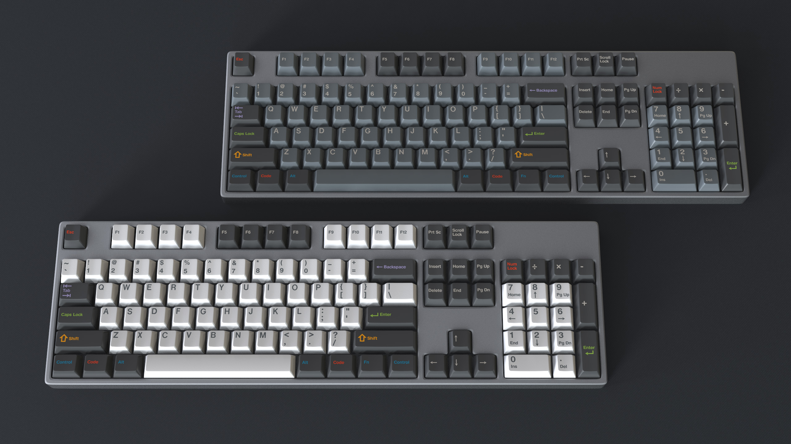
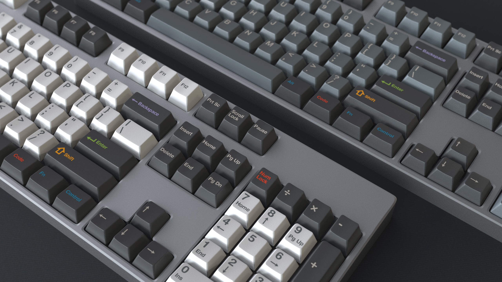

Feedback needed!
Unlike other GMK sets, I am considering dropping the icons from the legends on the modifier keys, and skipping the secondary legends on the numpad for a more clean look that I believe fits the vision of the Oblivion theme much better. Below you can see both versions, with and without icons to compare. Please take your time comparing them and then click on the link further down and cast your vote on what you prefer. I wish to check with the community what the general reception of this idea is before I make that decision.
Modifiers WITHOUT icons on legends AND NO secondary legends on Numpad
Modifiers WITH icons on legends AND WITH secondary legends on Numpad


Enter Feedback
Is there more?
Not right now, but GMK Oblivion is slated to be available in a group buy next month already, April 2017. The kits of this group buy will be revealed very soon after the feedback has been evaluated. A version in SA profile is sheduled for Q3 2017. More details here.